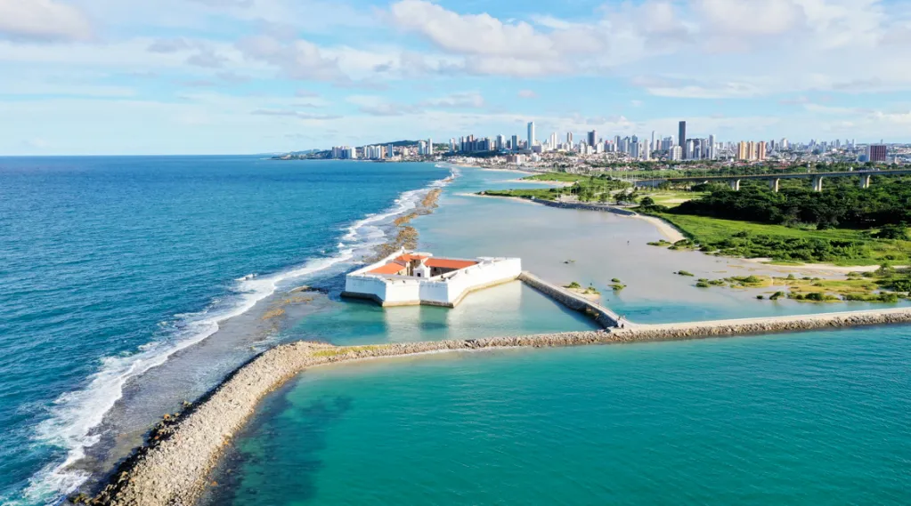
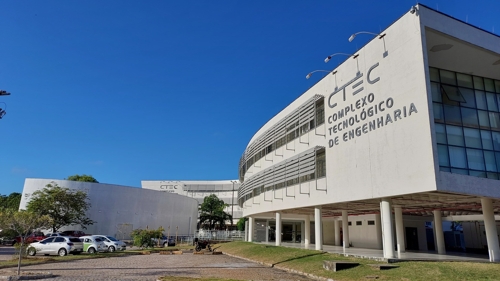
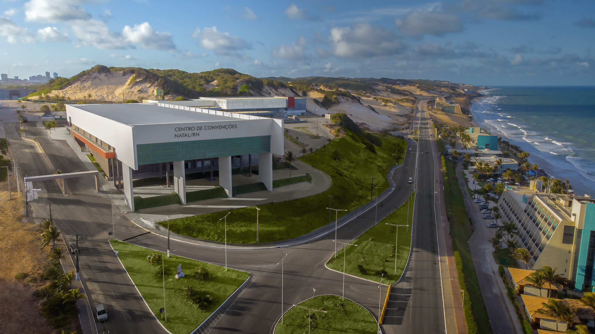

A cidade do evento

Localizada no nordeste brasileiro, a cidade de Natal é conhecida por suas belas paisagens naturais, clima agradável e forte potencial turístico e tecnológico. Capital do estado do Rio Grande do Norte, a cidade combina tradição cultural, hospitalidade e desenvolvimento urbano, tornando-se um importante ponto de encontro para eventos, negócios e inovação.
Famosa por suas praias, dunas e pela culinária regional, Natal oferece aos visitantes uma experiência única, reunindo lazer, cultura e contato com a natureza. Além do turismo, a cidade vem se destacando cada vez mais no cenário tecnológico, com crescimento de comunidades de desenvolvimento de software, inovação e empreendedorismo digital.


Com uma infraestrutura preparada para receber visitantes de diferentes regiões do país, Natal proporciona fácil acesso, espaços modernos para eventos e um ambiente acolhedor para networking e troca de conhecimento. Esses fatores fazem da cidade o local ideal para sediar o DevOpsDays Natal 2026.